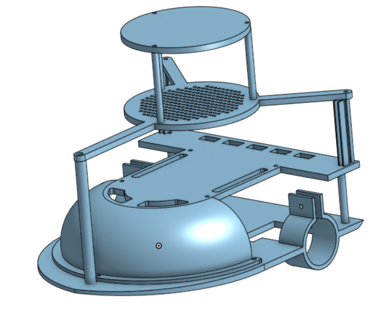

ENGINEERING JOURNAL / ROBOTICS / PROJECT 001
Columbus Maximus.
View Repository on GitHub ↗An autonomous indoor differential-drive mobile robot engineered to solve GPS-denied localization from first principles — combining 2D LiDAR SLAM, Ultra-Wideband (UWB) anchor ranging, wheel odometry, and Extended Kalman Filter state estimation in ROS 2 Humble.

01 / THE LOCALIZATION PROBLEM
Why indoor localization is genuinely difficult.
In outdoor environments, mobile robotic systems rely on global navigation satellite constellations (GNSS / GPS) to establish an absolute coordinate baseline. Once a rover moves indoors, satellite radio signals are heavily attenuated and scattered by reinforced concrete, steel framing, and multi-story masonry. Without external radio fixes, an indoor robot must determine its instantaneous position and orientation solely through onboard perception and dead reckoning.
The most accessible source of motion feedback is wheel odometry: reading optical or magnetic quadrature encoder pulses directly from the motor output shafts. At high sampling frequencies (50 Hz), wheel encoders provide smooth, low-latency estimates of linear and angular displacement. However, odometry possesses a fundamental mathematical weakness: every measurement error is cumulative. Minute physical discrepancies — such as transient wheel slip on polished tiles, slight tire compliance under load, or a sub-millimeter deviation in effective wheel diameter — introduce heading errors that integrate monotonically over distance. Without external correction, a dead-reckoned trajectory quickly diverges from physical reality.
To mitigate this divergence, mobile robotics typically turns to 2D planar LiDAR SLAM (Simultaneous Localization and Mapping), which matches successive laser scans against an evolving occupancy grid. Scan matching functions reliably in cluttered rooms with distinct geometric features, but its performance degrades in long featureless corridors, open spaces exceeding the sensor's range, or environments with dynamic human traffic and optically reflective surfaces.
Columbus Maximus addresses this challenge by fusing complementary sensing modalities: high-rate dead reckoning from wheel encoders, absolute range measurements from a stationary Ultra-Wideband (UWB) anchor constellation, and planar laser scans from a 2D LiDAR, integrated within an Extended Kalman Filter (EKF) under ROS 2 Humble.
02 / HARDWARE ARCHITECTURE & REAL-TIME CONTROL
Dual-tier compute topology & differential-drive kinematics.
A central architectural decision in Columbus Maximus was the strict separation of hard real-time motor control from high-level perception, transforms, and planning. A multitasking Linux operating system introduces kernel preemption latency and scheduling jitter, making it ill-suited for deterministic microsecond-level encoder interrupt handling. Conversely, executing graph-based SLAM, coordinate frame transforms, and navigation costmaps exceeds the memory and compute capacity of a standalone microcontroller.
To solve this, the robot implements a dual-tier computing topology:
The primary computing unit is a Raspberry Pi 4B running 64-bit Ubuntu 22.04 LTS and ROS 2 Humble. The Pi manages the higher-level robotics stack: maintaining the TF2 coordinate transform tree, ingesting planar laser scans, running the SLAM Toolbox occupancy grid node, executing state estimation, and hosting the Nav2 navigation architecture.
The low-level embedded controller is an ESP32 microcontroller (ESP32-WROOM-32) running modular C firmware built with ESP-IDF. The ESP32 is dedicated strictly to real-time deterministic tasks: counting quadrature encoder pulses through hardware timer interrupts, executing a discrete 50 Hz proportional-integral-derivative (PID) wheel velocity loop, calculating differential kinematics, and streaming telemetry over a USB serial connection to the Raspberry Pi at 115200 baud.
Drive Kinematics & Actuation
The physical chassis utilizes a differential-drive configuration with two driven wheels mounted on a shared transverse axis, complemented by front and rear omni-directional caster ball bearings. This provides stable three-point ground contact while preventing planar overconstraint. The kinematic baseline features a track width / wheelbase of L = 0.22 m (22 cm) and a wheel diameter of d = 0.11 m (11 cm). For target forward velocity v and angular velocity ω, the individual wheel velocity targets are derived from differential-drive kinematics:
v_left = v - (ω · L / 2) | v_right = v + (ω · L / 2)
Actuation is delivered by Rhino GB37 12V DC gearmotors equipped with optical quadrature encoders generating 2925 counts per output shaft revolution, driven through a SmartElex 15S motor driver. The ESP32 generates 20 kHz pulse-width modulation (PWM) signals — well above the audible human spectrum to eliminate motor hum and reduce current ripple — with directional logic routed to dedicated GPIOs:
- Left Motor: PWM on GPIO 18, Direction on GPIO 19.
- Right Motor: PWM on GPIO 16, Direction on GPIO 17.
Power Distribution & Electrical Isolation
The planned mobile battery specification is an 11.1V, 2200mAh, 3S LiPo battery with an XT60 connector. During testbench development, power distribution is organized across isolated dual-rail step-down DC buck converters. Separating the high-current motor driver supply from the 5V logic rail prevents back-EMF voltage drops and inductive transients generated during rapid motor reversals from causing ESP32 resets or USB communication drops.
03 / SOFTWARE ARCHITECTURE & DATA PIPELINE
Deterministic dataflow across ROS 2 Humble.
The software architecture is structured into modular ROS 2 Humble packages connected over standardized topic interfaces:
-
The USB Serial Bridge (
columbus_serial_bridge): Operates as the communication gateway between Linux and the ESP32 over UART0 at 115200 baud. The node subscribes to/cmd_vel(geometry_msgs/msg/Twist), formats velocity targets into lightweight serial packets (VEL,v,w), and parses incoming telemetry strings (ODOM,x,y,yaw,v,w) at 50 Hz. It publishesnav_msgs/msg/Odometryon/odomand continuously broadcasts the dynamic spatial transform fromodomtobase_link. -
Coordinate Frame Transforms (TF2): A clean kinematic tree is maintained across the robot, ensuring unambiguous geometric transformations between compute nodes and sensor origins:
map → odom → base_footprint → base_link → laser_frame / uwb_tag -
Planar Laser Perception (LDS-02 LiDAR): The robot incorporates an LDS-02 2D LiDAR scanning over 360 degrees, connected to the Raspberry Pi through a CP210x USB serial bridge (typically recognized at
/dev/ttyUSB0or/dev/ttyUSB1). In testing, the unit delivers approximately 360 distance measurements per revolution at an observed scan rate of ~9 Hz. In the software repository, driver configuration explored both the ROBOTIS LDS driver (hls_lfcd_lds_driver / hlds_laser_publisher) and theld08_driverpackage; maintaining correct frame stamping withlaser_frameand temporal alignment remains essential for downstream SLAM. -
2D SLAM Mapping: The
slam_toolboxpackage runs in asynchronous online mode (async_slam_toolbox_node), consuming/scanand/odomto construct 2D occupancy grid maps (/map) while teleoperating the rover throughcolumbus_teleop.
04 / LOCALIZATION & SENSOR FUSION
Ultra-Wideband trilateration & the Extended Kalman Filter.
The central premise of Columbus Maximus is that no single sensor can provide bounded-drift localization independently. The platform combines two fundamentally different measurement models:
Ultra-Wideband (UWB) Constellation
Absolute positioning is provided by Decawave DWM3001C UWB modules communicating via Two-Way Ranging (TWR). Four static anchor transceivers are placed at surveyed positions within the operating space, configured on the testbench at Cartesian coordinates [0, 0], [200, 0], [0, 200], and [200, 200] cm.
A mobile tag mounted on the robot communicates with the Raspberry Pi over a USB serial interface at /dev/ttyACM0 (115200 baud). The custom ROS 2 node uwb_tracker (implementing uwb_node.py and uwb_node_rviz.py) continuously reads incoming anchor ranges, formulates a linearized least-squares trilateration matrix:
A · [x, y]ᵀ = b
and solves for the rover's planar position, publishing geometry_msgs/msg/Point coordinates on /uwb_pose.
The Extended Kalman Filter (EKF)
To combine these disparate sources of information, an Extended Kalman Filter (implemented through the robot_localization package) fuses the continuous motion estimates:
- Wheel Odometry (Process Model): High update rate (50 Hz), low latency, and smooth short-term velocity estimates. However, errors accumulate unbounded over extended travel.
- UWB Trilateration (Measurement Update): Lower update rate (10 Hz), subject to RF measurement noise and multipath reflections, but characterized by zero cumulative drift over time. Because the anchors occupy fixed surveyed coordinates, UWB provides a global anchor that pulls the odometry estimate back toward ground truth.
The continuous planar state vector tracks robot position, heading, and their respective first derivatives:
Current Status: Wheel odometry velocity estimation and 2D LiDAR scan pipelines are verified and operational. The UWB anchor constellation has been validated in static testbench benchmarks; real-time dynamic covariance tuning under continuous robot acceleration and wheel slippage remains under active development.
05 / PROTOTYPING CHALLENGES & HARDWARE LESSONS
Engineering hurdles encountered in hardware.
Physical robotics frequently surfaces discrepancies between theoretical models and real-world behavior. The development of Columbus Maximus has encountered several practical engineering hurdles:
1. Wheel Slip During In-Place Rotation
Because Columbus Maximus uses differential-drive kinematics supported by omni-directional casters, commanding sharp zero-radius turns on smooth lab tiles occasionally caused the drive tires to momentarily slip. The encoders reported rotational velocity that did not fully correspond to physical angular displacement, introducing heading discrepancies into pure dead reckoning. This was addressed by implementing smooth angular acceleration profiling in the ESP32 PID velocity controller and appropriately weighting the angular velocity covariance matrix in the EKF so the filter does not blindly trust encoder heading during rapid turns.
2. UWB Multipath Reflections & Non-Line-of-Sight Conditions
Radio frequency signals traveling between the rover tag and static anchors occasionally reflect off metallic equipment cabinets or travel through structural walls. Because RF waves travel at the speed of light, indirect multipath trajectories measure longer time-of-flight intervals, resulting in transient artificial distance jumps of 20 to 40 cm. To prevent these spikes from corrupting the trilateration matrix, an outlier pre-filter was designed to compute residual deviations against predicted robot states, discarding anomalous range measurements before least-squares matrix inversion.
3. Temporal Alignment Across Operating Environments
ROS 2 relies strictly on accurate header timestamps to interpolate spatial transforms in the TF tree. The ESP32 internal hardware clock ticks at its own rate, while the Raspberry Pi runs system time under Linux. Slight clock drift between the two platforms caused occasional TF_OLD_DATA warnings. The resolution was to establish temporal synchronization across the serial interface by stamping incoming encoder telemetry on arrival at the Raspberry Pi serial reception thread, ensuring a unified temporal baseline across the ROS graph.
4. Motor Inductive Transients & Logic Brownouts
During sudden motor direction reversals, the DC gearmotors drew peak stall currents that created transient back-EMF voltage drops on the common 5V logic rail, causing the ESP32 to unexpectedly reset. The problem was resolved by physically separating motor power and logic power onto isolated battery rails with dedicated DC-DC step-down buck regulators, and adding flyback snubber protection across the motor terminals.
06 / DEVELOPMENT REALITY & VERIFICATION
Candid assessment of the current build.
To maintain authentic engineering documentation, it is essential to distinguish between functionality that has been physically verified, systems under active calibration, and components that remain in development:
Fully Implemented & Verified: The differential-drive mechanical chassis, SmartElex 15S motor driver integration, Rhino GB37 encoder feedback, ESP32 50 Hz discrete PID velocity firmware, USB serial bridge, robot URDF description, TF2 spatial transforms, and teleoperated 2D SLAM mapping via SLAM Toolbox are operational on the physical robot.
In Testing & Bench Calibration: The DWM3001C four-anchor UWB trilateration network has been verified on static test stands. Continuous dynamic range tracking while the rover is in active motion is currently undergoing calibration.
Partially Integrated: Multi-sensor Extended Kalman Filter fusion. The wheel odometry state estimation model is active, while dynamic covariance matrix tuning for blending UWB coordinates during active maneuvers is currently in progress.
Planned Future Work: Fully autonomous point-to-point waypoint navigation via Nav2. While the ROS 2 Humble Nav2 packages are installed and the baseline topics (/scan, /odom, and /map) are published, Columbus-specific costmap inflation radii, trajectory controller parameters, and obstacle recovery behaviors remain to be tuned on the physical hardware.
07 / POSSIBLE ADVANCEMENTS
Potential engineering directions for future iterations.
Rather than guaranteed commitments, these represent meaningful engineering possibilities grounded in the robot's physical architecture and development trajectory:
- Dynamic UWB Covariance & Outlier Pre-Filtering: Implementing adaptive measurement noise covariance matrices ($R_k$) that scale dynamically based on anchor geometric dilution of precision (GDOP) and signal quality indicators, improving multipath rejection in complex room layouts.
- Physical Footprint Tuning for Nav2: Developing a dedicated Columbus-specific parameter configuration for Nav2's controller and planner servers — tuning DWB local trajectory controller limits, inflation radii, and collision footprint polygons tailored to the differential-drive kinematics and caster wheel dynamics.
- 9-DOF Inertial Measurement Unit (IMU) Integration: Incorporating a calibrated IMU (such as a BNO055 or ICM-20948) over I2C to provide high-rate angular velocity ($\omega_z$) and linear acceleration measurements, directly constraining yaw drift during sharp rotations before UWB updates occur.
- Multi-Modal 3D Perception: Evaluating the addition of a compact forward-facing RGB-D depth camera (such as an Intel RealSense or OAK-D) to generate 3D voxel obstacle costmaps, detecting low-lying obstacles or table overhangs that fall outside the 2D planar LiDAR scan plane.
All ROS 2 packages, ESP32 firmware, and launch configurations are open-source and documented on GitHub.